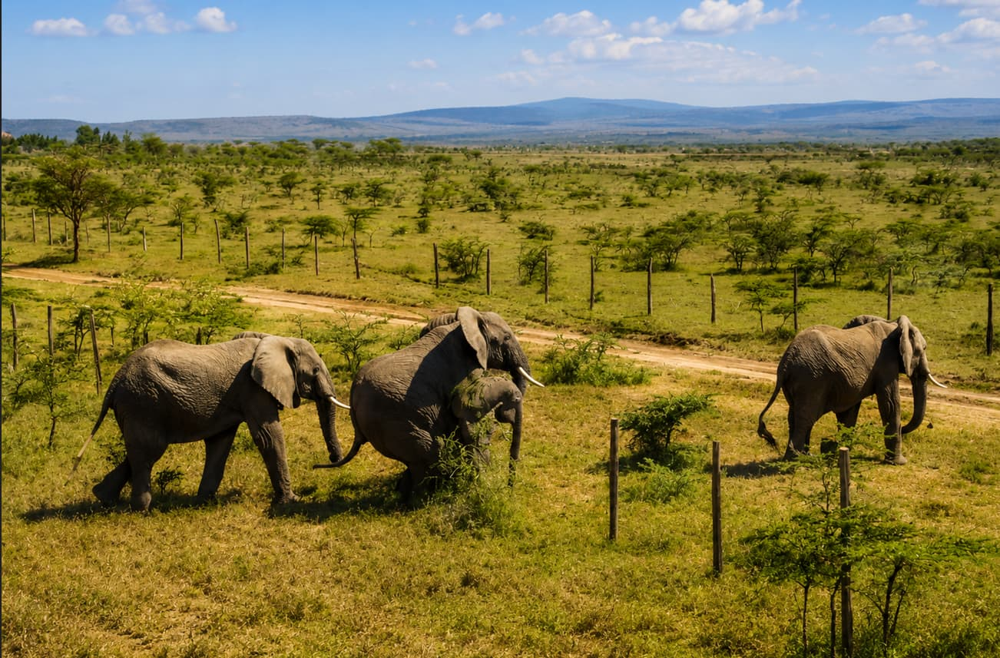
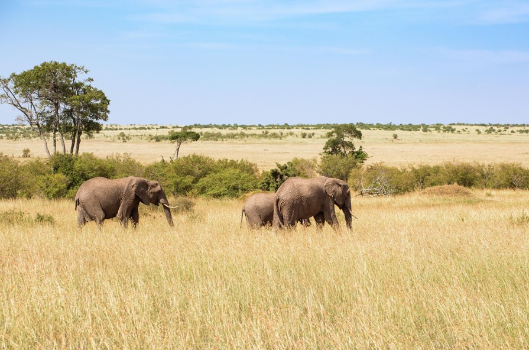
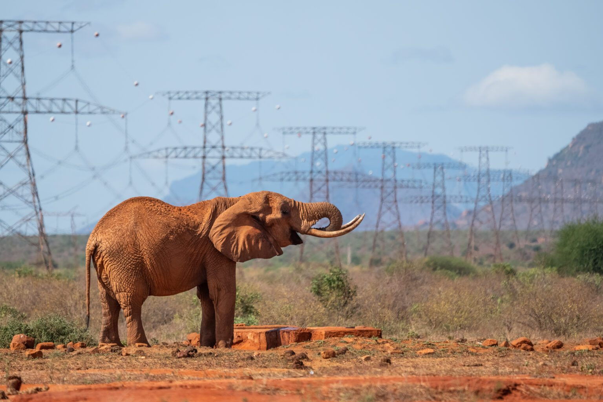
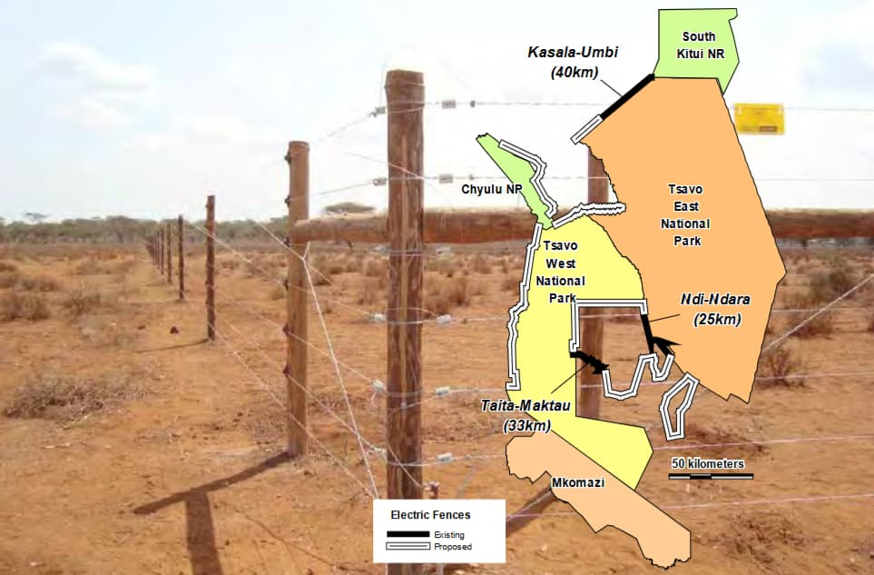
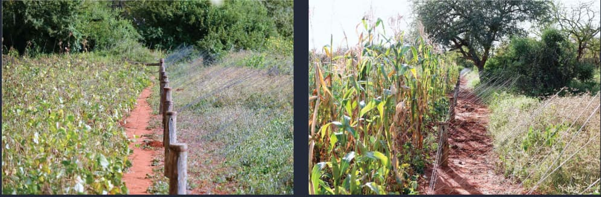
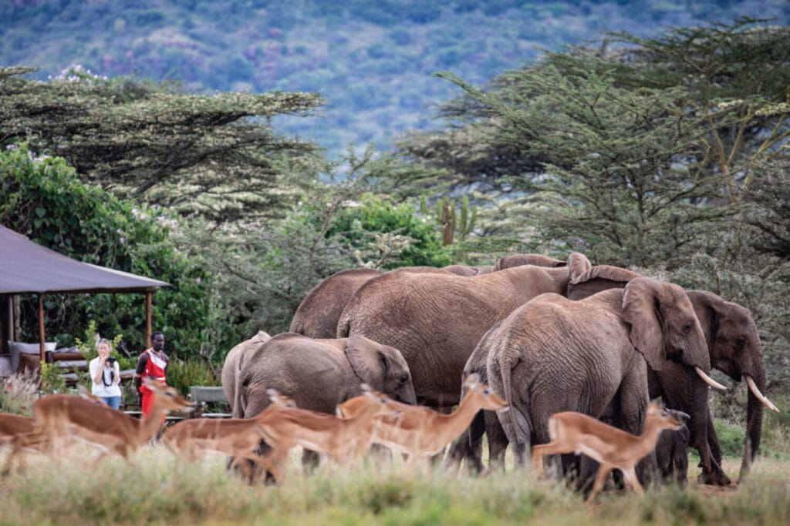
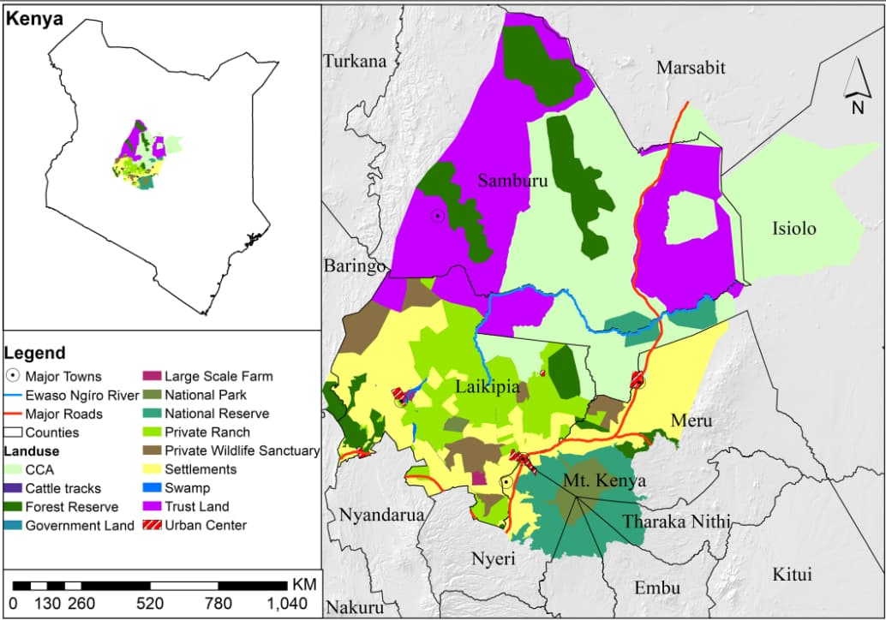

In Kenya, a country with over 36,000 elephants across a number of national parks, conservancies, and community lands, elephants and people are increasingly sharing same landscapes. The result is one of conservation's most complex challenges, Human-Elephant Conflict, a challenge that is as much about governance and equity as it is about wildlife management.
This blog was adapted from my research report submitted for the Development and Climate Justice module. The full report aimed to answer the question, What is best practice in managing Human-Elephant Conflict proximate to protected areas with case studies being Maasai Mara, Tsavo and Laikipia ecosystems in Kenya.
Background
Human–Elephant Conflict (HEC) has become one of the most persistent and complex conservation challenges in regions where human populations and wildlife increasingly share space. In Kenya, this challenge is particularly pronounced in areas adjacent to protected landscapes, where expanding agricultural activity, climate variability, and land-use change continue to intensify interactions between people and elephants.
While elephants play a critical ecological role in shaping vegetation structure and maintaining ecosystem functioning, their movement across human-dominated landscapes has resulted in significant socio-economic costs. Crop losses, threats to human safety, and property damage have become common occurrences for communities living near protected areas. At the same time, elephants face retaliatory killings and increased mortality linked directly to this conflict.
Human–Elephant Conflict as a Socio-Ecological Challenge
HEC is often framed as a wildlife management issue. However, evidence increasingly demonstrates that it is equally a governance and equity challenge. The drivers of conflict extend beyond elephant behaviour to include land-use pressures, habitat fragmentation, and institutional arrangements that shape how conservation is implemented.
As human populations grow and agricultural lands expand into wildlife habitats, elephants are forced to navigate landscapes that are increasingly becoming fragmented. Climate variability further exacerbates this dynamic by altering the distribution of water and forage, intensifying seasonal elephant movements into human settlements.
The impacts of this conflict are multidimensional. Communities incur substantial economic losses from crop damage, often undermining food security and livelihoods. In response, individuals resort to labour-intensive and risky strategies to avert these losses. Additionally, from a conservation perspective, HEC undermines public support for wildlife conservation, leading to retaliatory actions that threaten elephant populations.
Conventional Management Approaches and their Limitations
A wide range of interventions has been implemented to manage HEC, including electric fencing, deterrents, compensation schemes, and in some cases lethal control. However, many of these approaches focus primarily on mitigation rather than addressing the underlying drivers of conflict.
Electric fencing has been widely adopted to restrict elephant movement and protect agricultural land. While effective in reducing conflict locally, fencing is costly to maintain and often contributes to habitat fragmentation. In many cases, it simply displaces conflict to neighbouring areas rather than resolving it.

Elephants in the Mara, photographed by a drone moving past a fence. (Source: Mara Elephant Project)
Deterrents such as chilli fences and beehive barriers have been promoted as low-cost alternatives. Although effective in certain contexts, their success is highly dependent on maintenance and the willingness of local communities to adopt them.
Compensation schemes, intended to offset economic losses, are frequently characterised by delayed payments, limited coverage and administrative bureaucracies and they also fail to address non-economic impacts such as fear and loss of life.
More controversial approaches such as killing, only used rarely and only during emergencies or relocating elephants have shown limited long-term effectiveness and raise significant ethical concerns.
The critical questionWhat constitutes best practice in managing Human–Elephant Conflict?
In my report, best practice was assessed based on ecological effectiveness, economic impact, social equity and long-term sustainability of the approaches used.
Lessons from Kenya: Comparative Insights
Maasai Mara

The Maasai Mara ecosystem illustrates the potential of integrated, community-led conservation models. Over 16,500 landowners lease out their lands through community conservancies. These conservancies act as buffer zones between protected areas and human settlements while also generating economic benefits through tourism revenue and payouts from land leasing.
Moreover, the use of GPS tracking and drones by NGO-funded organisations such as Mara Elephant Project has enabled more proactive responses to elephant movement. At the household level, deterrents such as beehive fences provide both crop protection and additional income. These approaches have reduced retaliatory killings, improved tolerance toward elephants, strengthened local participation and improved social acceptance and legitimacy of conservation efforts.
HEC management in the Mara is however still resource intensive and depends on NGO funding, technical expertise and steady stream of tourism revenues, which may not bereplicable in areas that have little or no funding. Similarly, the lack of transparencyin distribution of benefits can also breed tensions, especially where certain beneficiaries receive disproportionate shares.
Tsavo

The Tsavo ecosystem represents a predominantly state-led approach characterised by large-scale electric fencing and compensation mechanisms. While fencing has reduced crop raiding in some areas, its effectiveness remains uneven. Conflict is frequently displaced to unfenced zones, and restrictions on elephant movement raise concerns about ecological sustainability.

Large-scale electric fencing in Tsavo. Credit on full report.
Limited community involvement, lack of clear benefit sharing mechanisms and challenges with compensation schemes have reduced trust in conservation efforts in Tsavo. Similarly, the high financial costs of fencing limit scalability and because communities perceive fences as imposed, motivation to support maintenance becomes low.
However, emerging initiatives such as one by Tsavo Trust demonstrate a shift towards more integrated and coexistence-oriented approaches. For instance, the "10% Fence Plan" promotes a zoned land-use approach in which only 10% of farmland is enclosed with electrified fences for agricultural use, while the remaining 90% is left open to maintain wildlife movement and ecosystem connectivity. This approach not only protects livelihoods but also supports climate-smart agriculture and improves ecological connectivity.

Tsavo Trust's "10% Fence Plan" in practice. (Source: Tsavo Trust)
Laikipia and Northern Kenya

Lengishu House, Borana Conservancy, Laikipia: $14,000–$16,000 per night for up to six guests on an exclusive-use basis, depending on the season.
Laikipia and Northern Kenya landscape presents a more complex system shaped by private ranches, private and community-owned conservancies, and communal lands. While private conservancies and ranches often have the resources to effectively manage conflict, outcomes remain highly uneven. Wealthier land owners benefit more from tourism and properly managed ranching systems. Communities on communal lands however, seem to bear higher costs associated with restricted human and livestock movement, overgrazing, drought and land degradation. These pressures affect both pastoralists and smallholder farmers differently. Smallholder farmers are particularly vulnerable to crop damage and property loss from elephants, whereas pastoralists face increased risks to human safety and livestock while moving through elephant habitat in search of pasture and water.Additionally, historical land inequalities continue to shape conflict dynamics. This highlights how HEC is deeply embedded in broader socio-political and economic structures.

Map of major land uses in Laikipia and Northern Kenya. Credit on full report.
Nevertheless, NGOs, private ranches and conservation and other conservation actors have increasingly sought to address these imbalances through community-focused interventions including awareness-raising programs, dispute resolution initiatives, and engaging communities on viable approaches to strengthen local ownership of conservation and HEC management. In collaboration with pastoral communities specifically, they support restoration of degraded communal rangelands and provide training on sustainable rangeland management practices. Such interventions have the potential to strengthen local tolerance for elephants, reinforce legitimacy of HEC management strategies and in protect the ecosystem.
Beyond Technical Solutions
Across all case studies, one key insight emerges: there is no single solution to Human–Elephant Conflict. Effective management depends on integrating ecological effectiveness, social equity, community participation, and institutional legitimacy. Community-led approaches that deliver tangible benefits consistently show better long-term outcomes. In contrast, top-down and infrastructure-heavy strategies often provide only short-term relief.
Therefore, in efforts to ensure sustainable coexistence, conservation efforts should shift toward coexistence-based approaches rather than focusing on separating humans and elephants. This can be achieved through strong community engagement, fair distribution of benefits, integration of conservation into land-use planning, and investment in non-lethal deterring interventions that have real economic benefits for local communities.
Conclusion
Human–Elephant Conflict cannot be effectively managed through isolated interventions. It is a complex socio-ecological challenge that requires integrated, inclusive, and context-specific approaches. Evidence from Kenya demonstrates that conservation strategies which prioritise community involvement, equity, and long-term sustainability are more effective. Ultimately, best practice lies not in separating humans and elephants, but in creating systems that allow them to coexist within shared landscapes.
The takeawayBest practice lies not in separating humans and elephants, but in creating systems that allow them to coexist within shared landscapes.

African Savanna Elephant Range Map. Made by Author.